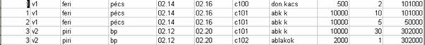

2.6. Adatbázis tervezése
Első adatbázisunkat egyetlen reláció alkotta, a 11 tulajdonságból álló Rendelés-tábla.
RENDELÉS {rendszám, vkód, vevőnév,
vevőcím, kelt, határidő, cikkszám, cikknév, egysár, rendmenny,
összérték}
A kulcs definíciója alapján tudjuk, hogy a kulcs egyértelműen meghatározza az összes tulajdonság értékét, azaz minden tulajdonság funkcionálisan függ a kulcstól:
{rendszám, cikkszám} → {vkód, vevőnév, vevőcím, kelt, határidő, cikknév, egysár, rendmenny, összérték}
A tulajdonságok között fennálló eredeti funkcionális függőségek az ügyvitel szerint (az előző fejezetben már felsoroltuk):
{rendszám} → {vkód, vevőnév, vevőcím, kelt, határidő, összérték}
{vkód} → {vevőnév, vevőcím}
{cikkszám} → {cikknév, egysár}
{rendszám, cikkszám} → {rendmenny}
A normalizálás 1. lépése -, miszerint a táblának van kulcsa - teljesül; minden sor önálló bejegyzésként kerül rögzítésre, A 11 tulajdonság kitöltésével redundáns táblát kapunk, mert több tulajdonság sem teljesen függ a kulcstól.
A 2. lépés tehát a kulcstól való részleges függőség megszüntetése. Összetett kulcsunk mellett nem maradhatnak azok a tulajdonságok, melyek csak a kulcs valamelyik részétől függnek (vkód, vevőnév, vevőcím, kelt, határidő, összérték, cikknév, egysár); új táblába kell kerülniük olyan kulccsal, melytől teljesen függnek:
ÚJ_RENDELÉS {rendszám,
cikkszám} → {rendmenny}
TÁBLA1 {rendszám} → {vkód, vevőnév, vevőcím, kelt,
határidő, összérték}
TÁBLA2 {cikkszám} → {cikknév, egysár}
Ezen teljes függőségek alapján 3 táblánk lesz az 1 helyett; mindháromnak beszédes nevet fogunk adni, ha végeztünk. (Vegyük észre, hogy az összetett kulcs tagjai ilyen esetben külső kulcsokká válnak.)
A 3. lépésben a kulcstól való tranzitív függőséget kell megszüntetni. Jelen esetben ilyen csak a 2. teljes függőségben található; mert a leírók között függőség áll fenn:
{vkód} → {vevőnév, vevőcím}
Emiatt van
tranzitivitás: {rendszám} → {vkód} → {vevőnév, vevőcím}
Ilyen
esetben azokat a leírókat, amelyek más leírótól függnek, új táblába kell
átrakni azzal a kulccsal, melytől közvetlenül függnek:
TÁBLA3 {vkód} → {vevőnév, vevőcím}
ÚJ_TÁBLA1 {rendszám} → {vkód, kelt, határidő, összérték}
(Vegyük
észre, hogy az a leíró, melyen keresztül jött létre a tranzitív függés, külső
kulccsá válik ilyen esetben.)
Így lesz 4 táblánk az eredeti 1 helyett a kapott 4 teljes és nem tranzitív függőség alapján:
TÁBLA2 {cikkszám} → {cikknév, egysár}
ÚJ_RENDELÉS {rendszám, cikkszám} → {rendmenny}
ÚJ_TÁBLA1 {rendszám} → {vkód, kelt, határidő, összérték}
TÁBLA3 {vkód} → {vevőnév, vevőcím}
A táblanevek lehetnének például a fenti sorrendnek megfelelően CIKK, RENDELÉS_TÉTEL, RENDELÉS_FEJ, VEVŐ:
CIKK {cikkszám,
cikknév, egysár}
RENDELÉS_TÉTEL
{rendszám, cikkszám, rendmenny}
RENDELÉS_FEJ
{rendszám, vkód, kelt, határidő, összérték}
VEVŐ {vkód,
vevőnév, vevőcím}
Végül lássuk be, hogy a függőségek megmaradtak az adatbázisban, mégpedig az egyes táblákon belül, mivel „a kulcs egyértelműen meghatározza a tábla összes tulajdonságát". Tehát, ha normalizált adatbázist látunk, akkor a függőségi családot kiolvashatjuk az egyes táblákból. Ezen függőségekből továbbiakat tudunk bármikor származtatni a funkcionális függőségekre vonatkozó szabályok szerint (az előző fejezetben ezt tettük).
Kapcsolatok
RENDELÉS_TÉTEL → CIKK
RENDELÉS_TÉTEL → RENDELÉS_FEJ
RENDELÉS_FEJ → VEVŐ
Látható, hogy a RENDELÉS_TÉTEL kulcsa az összes hozzátartozó
tulajdonság-értéket eléri a többi táblából.
Amennyiben 1 RENDELÉS-táblánk maradt volna, akkor
- nem tudnánk kivitelezni egy új cikk vagy vevő felvitelét mindaddig, amíg rendelés nincs hozzá,
- több sorban is el kellene végezni egyetlen cikk vagy vevő törzsadatának, esetleg egy rendelésfejbeli adatnak a módosítását,
- törzsadatot veszthetünk, amikor törlünk egy olyan rendelés-tételt, ami egy új vevőről vagy cikkről szólt.
|rendsz|vkód |vevőnév |vevőcím|kelt |határidő|cikkszá |cikknév |egysár|rendm|összért|

Megjegyzés
A harmadik normálformán túl már nem algoritmizálhatók a teendők; csak az elmélyült tervezői agy képes a redundancia csökkentését optimalizálni a funkcionális függőségek megtartása mellett. Azért nem tanulunk magasabb normálformákról és annak érdekében több speciális függőségről, mert azok elérése nem lehet mindig cél. Halassy Béla szerint az adatbázis-tervezést jól csinálni csak megszállottan lehet és hivatásként szabad űzni.